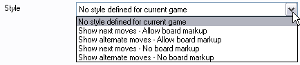
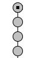
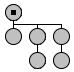

Drago - FAQ
Drago - FAQ
Why am I unable to print all the positions/variations I want?
Do you plan to port Drago for Linux or Mac?
Is there a portable version of Drago?
When searching games from Gu Li in my database, I also get games from Gu Lingyi. What can I do to get only games from Gu Li?
The input boxes in the search window construct a command describing the search. This command can be displayed by checking the SQL box. For instance, when searching Gu Li as a Black player, we get the command:
(PB like '%Gu Li%' AND PW like '%%')
The percent character is a placeholder replacing any sequence of characters. When removing it, we get only games from Gu Li:
(PB like 'Gu Li' AND PW like '%%')
I want to display next moves on the board. I am able to switch the option from alternate move display to next move display, but when I reload the file or restart Drago, alternate moves are displayed again. Is it a bug, what can I do?
The problem comes from SGF files with some setting of the ST property. This property enables SGF writers, or SGF clients, to configure the display of next moves or variations with some markups on board. The ST (STyle property) enables to specify:
- if the marks are visible or not
- if the marks are associated with next moves or variations
In accordance with SGF specification, the STyle property has priority over current settings, unless the user forces the settings. But changing the settings does not change the file, and you find back the setting you do not want when reloading the file!
To solve the problem, open the Information dialog (the "I" button), the Misc tab, select "No style defined for current game" in the Style combobox, save the file, and check if you can save and retrieve your settings.

Why am I unable to print all the positions/variations I want?
Let's first remind that a SGF file is a tree made of nodes. A node can store moves, setup stones, comments, markups and some more properties. Drago prints positions only if they can be reached with moves, not setup stones (except for the initial position).
This can be verified:
- by opening your SGF file with a text editor if you are familiar with the format. You should check that the position you want to print has no B[] or W[] property
- by looking at the game tree in Drago. Nodes with move properties are displayed with Black and White stones, and nodes without move properties are displayed with grey circles, like that:
 or 
Do you plan to port Drago for Linux or Mac?
Yes but this is a very long term goal. Here are some explanation why it is Windows only, and why it will be difficult to port.
First draft of Drago was written with Turbo Pascal. Its purpose was to store and print the lesson games I had with my teacher. After some years, I got the free personal version of Delphi and there were no doubts I wanted to start again Drago developement with it. Of course, it was Windows only but this was not an issue as I had no ambition of running it on another platform than my own personal computer!
Things have changed but Drago has grown. It includes now a lot of code and some external libraries. There is a way to port it by using the Free Pascal Compiler which is multi platform. But this will need a lot of work, rewrite and compromises. I am very sorry for Mac and Linux users but one more time, this is a very long term goal.
Anyway, Linux users can try to run Drago with Wine, but I have not heard about a satisfactory solution for Mac.
Is there a portable version of Drago?
Yes, you will find it at the download page. Note that Drago stores its settings in the folder where it is installed.
Thanks to all feedbacks. Feel free to contact me if you think some topic should be added to the FAQ.